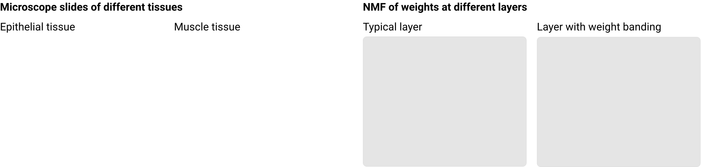

本文是 线程：电路 的一部分。该系列以实验性格式收集受邀的短文和批判性评论，深入探讨神经网络的内部工作机制。
分支 specialization
引言
打开任意一个 ImageNet 卷积网络，观察其最后一层的权重。你会发现其中存在一种均匀的空间模式，这与我们在网络其他位置看到的任何内容都截然不同。单个权重并无异常，但这种均匀性极为显著，以至于我们最初发现它时以为是个 bug。正如不同生物组织类型在显微镜下会呈现出明显区别一样，这个最终层的权重在用 NMF 可视化时也显得与众不同。我们将这种现象称为权重条带化（weight banding）。

到目前为止，线程：电路 主要关注对神经网络中非常微小部分的探究——InceptionV1早期视觉概览 和小型电路。相比之下，权重条带化是我们所称的“结构现象”的一个例子，即神经网络电路和特征中更大尺度上的模式。其他结构现象的例子包括我们在 神经网络中的自然等变性 模体中反复看到的对称性，以及在 分支特化 中观察到的神经网络的专化切片。 在权重条带化的情况下，我们将其视为结构现象，因为这种模式出现在整个层的尺度上。
权重条带化在性质上似乎也与反卷积过程中形成的 反卷积与棋盘格伪影 类似。
除了描述权重条带化，我们还将探讨它何时出现以及为什么会出现。我们发现，模型在末尾使用全局平均池化还是全连接层之间似乎存在因果联系，这表明权重条带化是保留图像中更大尺度结构信息的算法的一部分。建立这样的因果联系，是在训练神经网络的实际决策与我们观察到的内部现象之间形成闭环的一步。
权重条带化出现的场景
权重条带化在采用全局平均池化的视觉模型的最后一个卷积层中会稳定地形成。
为了看到这些条带，我们需要对权重的空间结构进行可视化，如下图所示。我们通常使用 NMF 来实现这一点，具体方法见“权重可视化”一节。对于每个神经元，我们提取它与前一层连接的权重，然后用 NMF 将前一层通道对应的维度数减少到 3 个因子，并映射到 RGB 通道。由于因子的顺序是任意的，我们使用一种启发式方法使不同神经元之间的映射保持一致。这样就揭示出非常显著的水平[1]条纹模式。
[交互图：2. 这些常见网络在其全连接层之前都有池化操作，并在最后一个卷积层稳定地表现出条带化。—— 原始链接：https://distill.pub/2020/circuits/weight-banding]
有趣的是，AlexNet 并没有表现出这种现象。
[交互图：3. AlexNet 在其全连接层之前没有池化操作，因此在最后一个卷积层没有出现条带化。为了便于寻找相似权重组，我们按简化后形式的相似性对每一层的神经元进行了排序。—— 原始链接：https://distill.pub/2020/circuits/weight-banding]
与大多数现代视觉模型不同，AlexNet 没有使用全局平均池化。相反，它有一个全连接层直接连接到最后一个卷积层，这使得它能够区别对待不同位置。如果观察这个全连接层的权重，会发现权重随全局 y 坐标发生强烈变化。
权重条带化中的水平条纹意味着滤波器不关心水平位置，但强烈编码了相对垂直位置。我们的假设是，权重条带化是一种学会的机制，用于在各种池化操作导致空间信息逐渐丢失时将其保留下来。
在下一节中，我们将构建一个简化的视觉网络，并研究其架构的不同变体，以准确理解产生权重条带化所需的条件。
什么因素会影响条带化
我们希望弄清楚哪些架构决策会影响权重条带化。这需要尝试不同的架构，并观察权重条带化是否持续存在。 由于我们每次只想改变一个架构参数，因此需要一个一致的基准架构来应用修改。理想情况下，这个基准应该尽可能简单。
我们设计了一个简化的网络架构，包含 6 组卷积层，由 L2 池化层分隔。最后，它有一个全局平均池化操作，将输入压缩为 512 个值，然后送入一个输出为 1001 类的全连接层。

这个简化网络在其最后一层稳定地产生权重条带化（通常前两层也会出现）。
[交互图：5. 简化模型最后一层权重的 NMF 显示出清晰的权重条带化。—— 原始链接：https://distill.pub/2020/circuits/weight-banding]
在本节剩余部分，我们将尝试修改这个架构及其训练设置，并观察权重条带化是否得以保留。
将图像旋转 90 度
为了排除训练中的 bug 或某些奇怪的数值问题，我们决定用旋转 90 度的输入进行一次训练。这一 sanity check 得到了非常清晰的结果：最终权重中出现了垂直条带，而非水平条带。这清楚地表明，条带化是 ImageNet 数据集中使空间垂直位置[2] 具有重要意义的特性所导致的结果。
[交互图 —— 原始链接：https://distill.pub/2020/circuits/weight-banding]
不使用全局平均池化的全连接层
我们移除了简化模型中的全局平均池化步骤，让全连接层能够一次性看到所有空间位置。该模型没有表现出权重条带化，但在全连接层中使用了多 49 倍的参数，并且在训练集上发生了过拟合。这为“常见模型在最后一个卷积层之后使用激进池化会导致权重条带化”提供了相当强有力的证据。该结果也与 AlexNet 不出现这种条带化现象一致（因为它同样没有全局平均池化）。
[交互图 —— 原始链接：https://distill.pub/2020/circuits/weight-banding]
仅沿 x 轴进行平均池化
我们对最终卷积层的每一行进行平均，从而保留垂直绝对位置，但丢失水平绝对位置。[3] 最后一层的条带化似乎消失了，但仔细观察后发现，5a 层仍能看到清晰的条带化，类似于基准模型的 5b 层。我们对这一结果感到意外。
[交互图：8. 在仅沿 x 轴池化的简化模型变体中，5a 和 5b 层权重的 NMF。5b 层的条带化消失了，但在 5a 层重新出现！—— 原始链接：https://distill.pub/2020/circuits/weight-banding]
权重条带化依然存在的实验
我们尝试了以下每一种修改，发现权重条带化在这些变体中依然存在。
附录中提供了一个交互图表，你可以探索这些实验以及更多实验的权重。
在常见架构中验证条带化干预措施
在上一节中，我们观察到两种明显影响权重条带化的干预措施：将数据集旋转 90 度，以及移除全连接层之前的全局平均池化。为了确认这些效果不仅局限于我们的简化模型，我们决定对三种常见架构（InceptionV1、ResNet50、VGG19）进行相同的干预，并从头开始训练。
除一个例外外，这三种模型都表现出相同效果。
InceptionV1
[交互图：9. Inception V1，mixed_5c 层，5x5 卷积 —— 原始链接：https://distill.pub/2020/circuits/weight-banding]
ResNet50
[交互图：10. ResNet50，最后一个 3x3 卷积层 —— 原始链接：https://distill.pub/2020/circuits/weight-banding]
VGG19
[交互图：11. VGG19，最后一个 3x3 卷积层。—— 原始链接：https://distill.pub/2020/circuits/weight-banding]
唯一的例外是 VGG19，在移除其全连接层之前的池化操作后，权重条带化并未如预期那样消失；这些权重与基准模型看起来相当相似。不过，它对旋转操作的响应依然明显。
结论
一旦我们真正理解了神经网络，我们应该能够利用这种理解来设计更有效的神经网络架构。早期的论文（如 Zeiler et al.）曾强烈强调这一点，但目前尚不清楚是否已经取得任何重要成果。这暗示了我们工作的重大局限性，也可能是一个被错过的机会：如果可解释性有助于提升神经网络的能力，那么它应该被更深入地整合到其他研究中，并吸引更广泛的研究者关注。
目前尚不清楚权重条带化是“好”还是“坏”。[4] 我们没有提出任何具体建议或可立即采取的行动。然而，它提供了一个架构决策与训练后权重之间稳定联系的实例。即使它本身并不具有很强的可操作性，但它具备能够为架构设计提供参考的正确特质。
更广泛地说，权重条带化是一个大尺度结构的例子。电路分析的一个主要局限性在于其尺度过小。我们希望，像权重条带化这样的大尺度结构能够帮助电路分析构建关于神经网络的更高层次叙事。
本文是 线程：电路 的一部分。该系列以实验性格式收集受邀的短文和批判性评论，深入探讨神经网络的内部工作机制。
分支 specialization